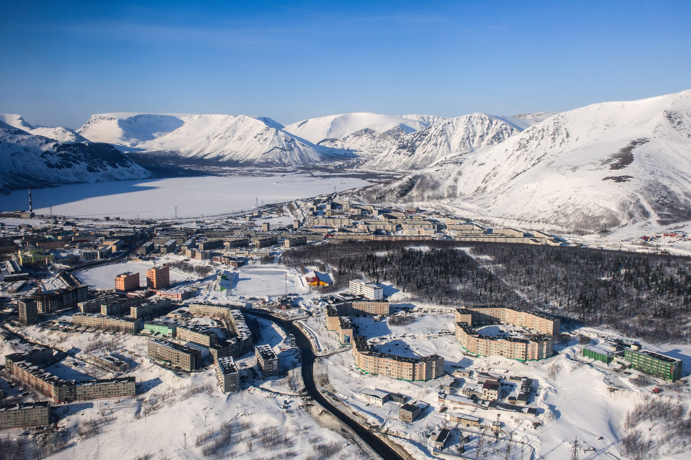
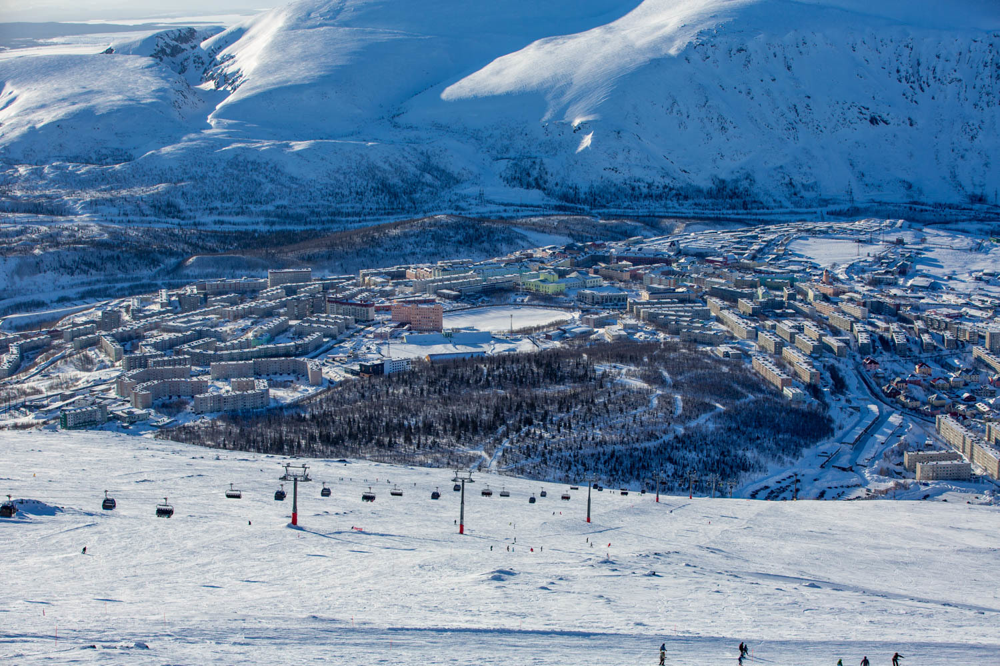

Кировск
Город расположен на Кольском полуострове в 205 км к югу от Мурманска, севернее Полярного круга, на южной окраине горного массива Хибины, на берегах озера Большой Вудъявр и реки Белая в долине Умптек. Город включает отдельно расположенный микрорайон Кукисвумчорр, находящийся у южного подножия горы Кукисвумчорр.
Население — 24 271 чел. (2023).
Крупнейшее предприятие Кировска — КФ АО «Апатит», входящее в состав компании «ФосАгро».
В состав этого предприятия входят: 3 рудника, на которых добыча руды ведётся как открытым, так и подземным способом, 2 апатитонефелиновые обогатительные фабрики.Помимо АО «Апатит», в Кировске функционируют предприятия пищевой промышленности (производство кондитерских изделий и безалкогольных напитков).

Кировск — один из центров российского горнолыжного спорта.
В районе города действует два подготовленных горнолыжных комплекса: «Большой Вудъявр» (южный и северные склоны горы Айкуайвенчорр: 5 бугельных подъёмников, кресельный и гондольно-кресельный подъёмник); «Кукисвумчорр» (южный склон горы Кукисвумчорр, 3 бугельных подъёмника, беби-лифт, 6 трасс).
В кинематографе
Кольский полуостров и город Кировск — один из самых кинематографичных регионов России.
Благодаря близости к центру страны и живописным ландшафтам, здесь снимались фильмы, действие которых по сценарию разворачивалось в разных регионах страны и мира. Мурманская область — уникальное место. За короткое время в относительной близости здесь можно снять и море, и пески, и горы, и тундры, и болота, и луга. Невероятной красоты природу можно выдать и за Африку, и за горы Кавказа. Что, собственно, и происходило: здесь снимали и сказки, и фильмы о войне, и документальные фильмы, и комедийные картины.
Что снимают?
В Хибинах кино снимали с 1930-х годов. Именно тогда этот край стали называть «Полярным Голливудом». Снимались здесь и киноленты, местом действия которых стали сами Хибины и люди, которые покоряли ледяную тундру и горы. Одной из таких картин стал фильм «Лавина», посвященный первопроходцам Хибин. Труженикам Хибин посвящен фильм «Факты минувшего дня».
В 2017 году в Кировске прошли съёмки сериала «Мёртвое озеро» (реж. Р. Прыгунов). Съемки проходили у подножья Хибинских гор и на берегу озера Большой Вудъявр. В сериале город Кировск назывался Чангадан.
С 2019 года в Кировске проходят съёмки комедийного сериала «Полярный». В нём Кировск представлен как одноимённый с названием сериала город, где по-прежнему царят «лихие девяностые».